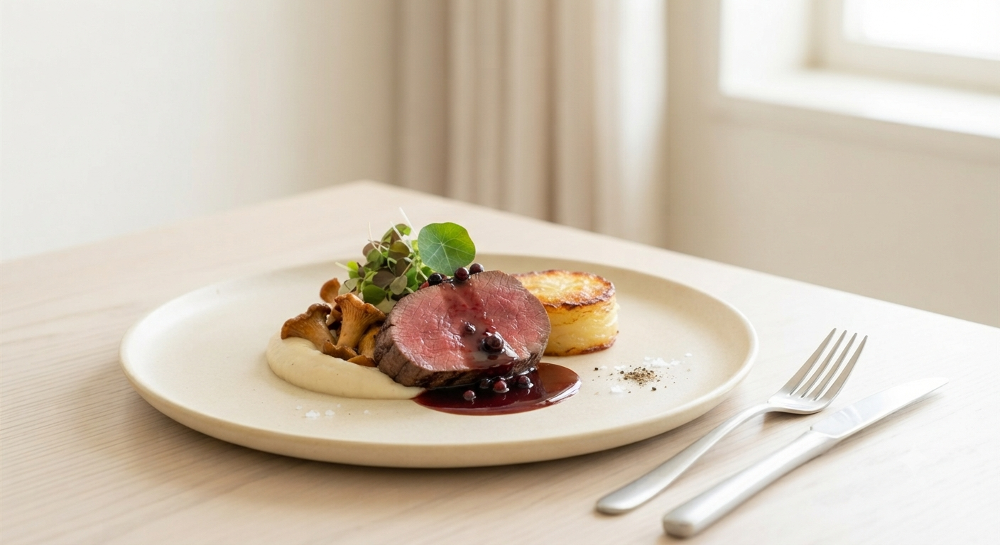
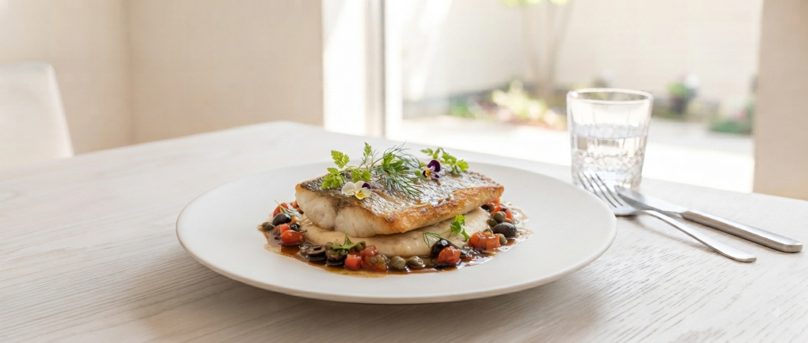
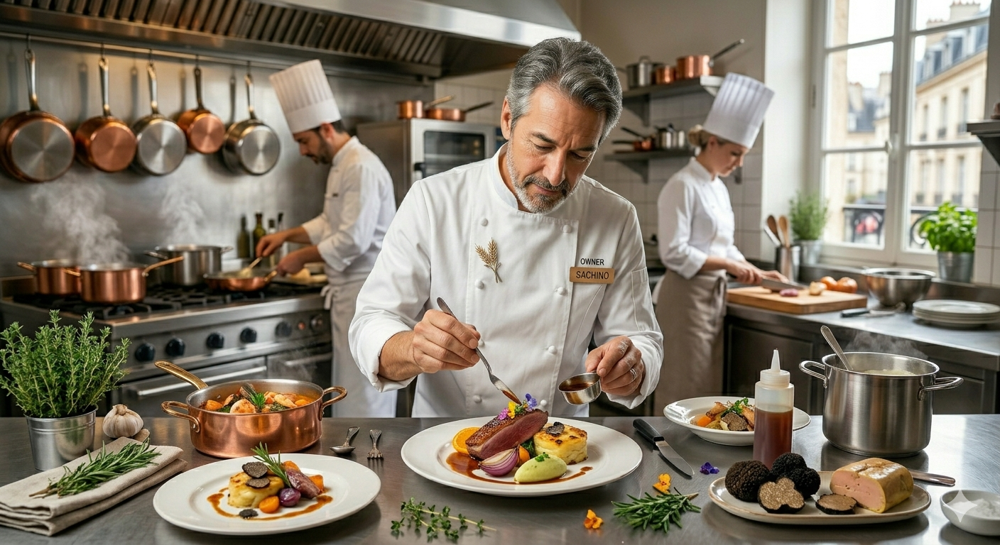

RISTORANTE SHIKAZAWA
TOHOKU GASTRONOMY EXPERIENCE

一皿一皿には、生産者の想いと岩手の文化が息づいています。
シェフ鹿澤自らが三陸の浜へ、北上の畑へ。信頼で結ばれた食材だけが、その日のインスピレーションによってクリエイティブな一皿へと昇華されます。
東北ガストロノミーを牽引する、唯一二の体験。

OWNER CHEF
1981年盛岡市生まれ。震災をきっかけに、料理の役割は「命を繋ぐこと」だと再認識。食材の質を超え、岩手の伝統・文化までもを表現する一皿を追求し続けています。
Gault & Millau 2024
Tabelog 2023 / 2025 イタリアン百名店
岩手県食のプロフェッショナルアドバイザー
ひとつひとつのお料理にはそれぞれストーリーがあり、その背景や生産者の想いを感じ想像しながら頂ける。味はもちろんのこと、そこに込められた背景がプラスの調味料となって更に美味しいと感じる。
岩手愛に溢れるお料理でした。ワインのペアリングも最高。季節を変えてまた行きたいですね。
ソムリエが厳選した世界の銘酒。そして飲めない方へは自家製のノンアルコールペアリングで。
無機質の中に居心地の良さを同居させた、ソリッドグレーの空間。大切な日、特別な方と。
鹿澤シェフ自らが料理の背景を語り、そのストーリーと共に味わう贅沢なひとときを。
料理に使われている食材の生産者の物語や、シェフがこだわる味付けのポイント、おすすめの味わい方をまとめた「オリジナルメニューカード」をただいま準備中です。
お料理の余韻を深め、特別な夜の思い出としてお持ち帰りいただけます。
リストランテ シカザワ
〒020-0827 岩手県盛岡市鉈屋町3-36
定休日：月曜日
※完全予約制のため、事前のご連絡をお願い申し上げます。